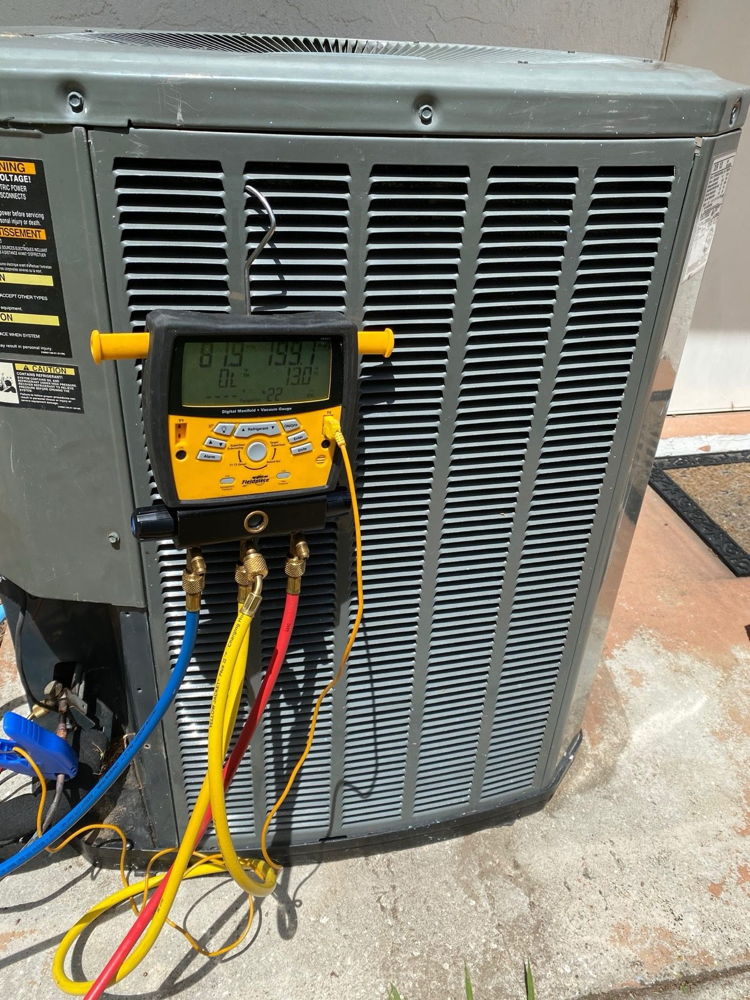
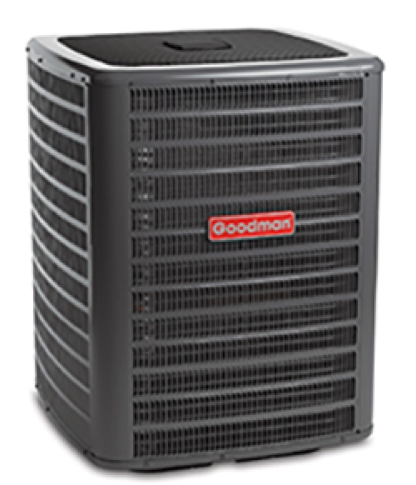

AC repair
Warm air, strange noises or a frozen unit. We diagnose and repair all major brands.
- Warm air
- Strange noises
- Frozen units

Nature Coast Air
AC repair, tune-ups and system replacements for homes on the Nature Coast.
Services
Home air conditioning in Spring Hill, Weeki Wachee and Hernando Beach.
Warm air, strange noises or a frozen unit. We diagnose and repair all major brands.

System maintenance built for Florida's heavy AC use, to head off summer breakdowns.
High-efficiency replacement units sized for your space.

How it works
Tell us what your system is doing.
You hear the problem and the price first.
Work done right, no surprises.
Good to know
Open 24 hours, seven days a week.
Call or text (352) 678-2948. You can also send the request form on the contact page.
Spring Hill, Weeki Wachee and Hernando Beach, plus nearby parts of Hernando, Citrus and Pasco. Call to check your address.
We diagnose and repair all major brands.
Yes. Call or text and we will dispatch right away.
You get an upfront quote before work starts. Call or text to ask.